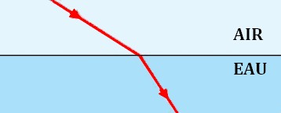

La réfraction est le changement de direction que subit un rayon lumineux lorsqu'il traverse la surface de séparation (appelée dioptre) entre deux milieux transparents différents (ex: l'air et l'eau). Ce changement est dû au fait que la lumière change de vitesse selon le milieu qu'elle traverse.

Cette image illustre la réfraction de la lumière, où le pinceau rouge semble brisé en changeant de milieu entre l'air et l'eau. Ce phénomène est dû au changement de vitesse de la lumière qui dévie les rayons lumineux à la surface de séparation.
Chaque milieu transparent est caractérisé par un nombre sans unité appelé indice de réfraction.
Chaque milieu est caractérisé par un indice de réfraction ("n"), défini par la formule :
Le rayon incident, la normale et le rayon réfracté sont tous situés dans le même plan (le plan d'incidence).
Elle lie les indices des milieux et les angles :

En comparant les indices, on peut prédire la direction du rayon :

si n1 > n2 (exp : mileu 1--> mileu 2):
Le rayon se rapproche de la normale .
alors : i2 < i1
si n2 > n1 (exp : mileu 2 --> mileu 1):
Le rayon s'écarte de la normale .
alors : i2 > i1